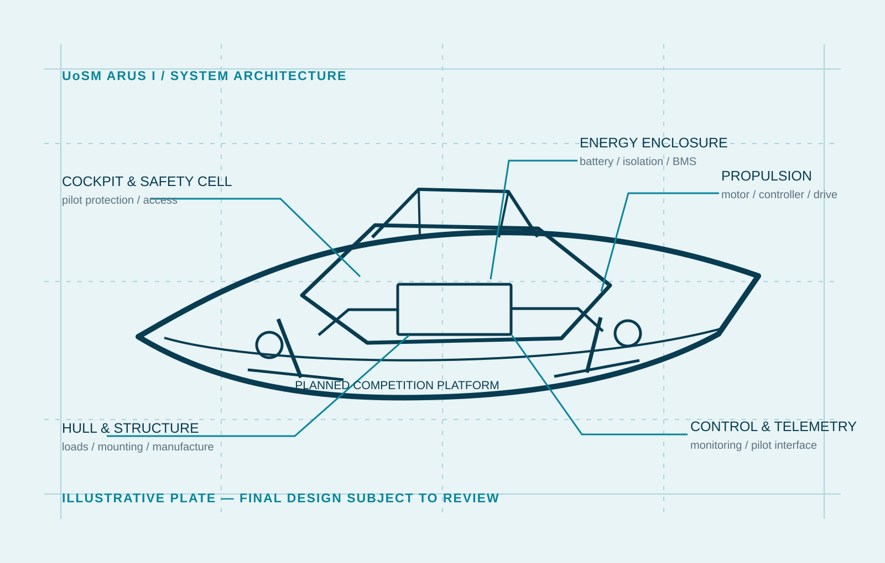

Previous prototype
Build and test record
Previous build and test work is being used to guide the new design.
University of Southampton Malaysia
A University of Southampton Malaysia student team designing and building an Energy Class boat for the Darwin Asia-Pacific Qualifier in September 2027.
Monaco 2028 depends on qualifying in Darwin.
Engineering
ARUS I combines marine structure, battery-electric propulsion, steering, controls, telemetry and safety systems in one competition boat.

Current work
The team is completing research, rules review, system architecture and component selection ahead of concept selection in September 2026.
Previous prototype
Previous build and test work is being used to guide the new design.
ARUS I design
The current baseline covers the hull, cockpit, propulsion, energy storage, protection, controls and telemetry.
Roadmap
Darwin is the required qualifier. Monaco follows only if the team qualifies and the final dates are confirmed.
Rules matrix, technical options, initial budget and concept selection.
CAD, systems integration, procurement planning, risk controls and design freeze.
Integrated prototype, dry tests, first-water testing and corrections.
Full integration, inspection evidence, transport planning and qualifier preparation.
Conditional final campaign, competition and project handover.
Team
Nine students across leadership, electrical and mechanical engineering, supported by four academic advisors.
Academic advisors
Updates
Recent decisions and milestones.
Sponsorship
Support can be financial or in kind, including components, fabrication, testing, software and logistics.
Campaign funding
RM150,000 working targetThe costed engineering scope is RM81,826. The Darwin-to-Monaco campaign is planned at RM130,000–RM180,000 while remaining quotations are completed.
View the cost schedule and benefits| Partnership level | Contribution | Typical role |
|---|---|---|
| Flagship Partner | RM10,000+ | Project-wide or named-scope support |
| Strategic Partner | RM5,000–RM9,999 | Major subsystem or competition support |
| Innovation Partner | RM2,500–RM4,999 | Defined engineering or campaign scope |
| Supporting Partner | RM500–RM2,499 | Matched component, service or event need |
Current partners